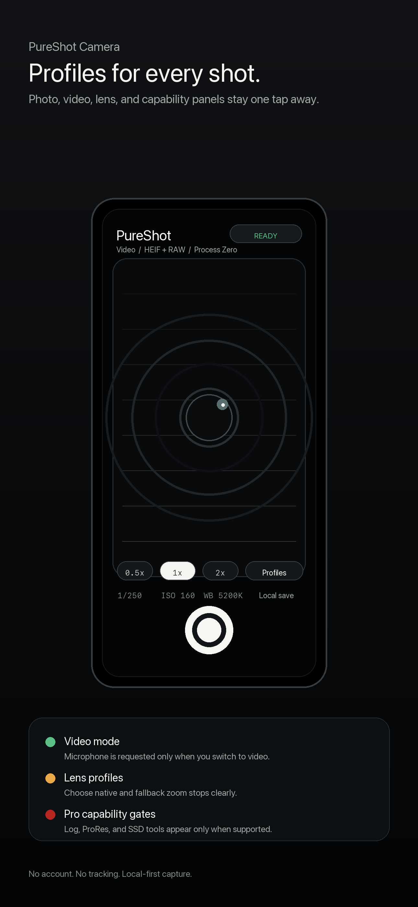
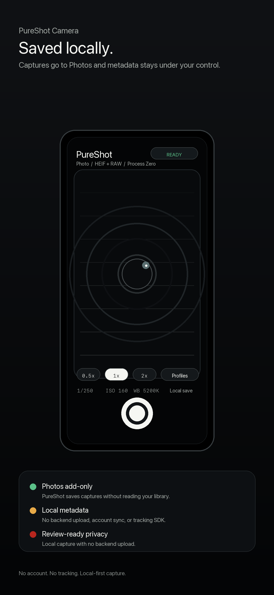

No-filter natural capture
The product story is simple: take the picture without turning every face, wall, and cloud into plastic soup.
Process Zero capture
A natural camera app with visible manual controls, local media handling, and none of the fake-polish drama. Point, frame, shoot, keep the scene honest.

The product story is simple: take the picture without turning every face, wall, and cloud into plastic soup.
Photo, video, resolution, format, lens zoom, and Process Zero state are on the shooting surface where they belong.
No tracking SDK, no account requirement, no cloud upload claim hiding in the bushes. Captures stay on device unless you export them.
Real app captures
These are live PureShot captures with the app UI visible. The old empty screens can do paperwork duty lower on the page.


Capture controls
Switch between stills and video from the capture surface without turning the camera into a settings scavenger hunt.
Keep common capture decisions close to the shutter. PureShot exposes the important state instead of pretending camera defaults are magic.
Profiles remain available for detailed Photo, Video, Lens, and Capabilities review when the hardware supports them.


Privacy and support
PureShot does not include analytics SDKs, advertising SDKs, cookies, tracking pixels, or third-party telemetry in the launch app.
Captured photos, videos, and metadata remain on the device unless the user explicitly exports through iOS system flows.
PureShot is built for iPhone 15 and newer plus M-series iPad models, with advanced workflows shown only when device capabilities support them.
Guides and support
Use the blog for practical capture notes, the support page for device and permissions details, and the policy pages when App Review or a cautious human asks what the app actually does.
No sparkle cannon. No waxy skin. Just the scene, the sensor, and fewer excuses.
Support Controls, devices, and permissionsDevice support, resolution controls, lens zoom, profiles, and direct support contact.
Privacy What the launch app does not collectPlain-language privacy details for a local camera utility.